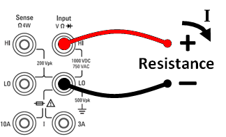
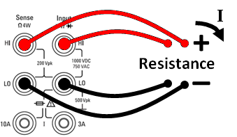

This section describes how to configure 2-wire and 4-wire resistance measurements from the front panel.
Step 1: Configure the test leads as shown.
| 2-wire Resistance: |
|
 |
|
4-wire Resistance: |
|
 |
Step 2: Press [Ω2W] or [Ω4W] on the front panel. The following menu appears. (The Ω4W menu does not include Auto Zero.)
Step 3: For the 34465A/70A, the Aperture NPLC softkey is selected by default. Use the up/down arrow keys to specify integration time in power-line cycles (PLCs) to use for the measurement . 1, 10, and 100 PLC provide normal mode (line frequency noise) rejection. Selecting 100 PLC provides the best noise rejection and resolution, but the slowest measurements:
Step 4:Press Range to select a range for the measurement. (Auto (autorange) automatically selects the range for the measurement based on the input. Autoranging is convenient, but it results in slower measurements than using a manual range. Autoranging goes up a range at 120% of the present range, and down a range below 10% of the present range. Press More to switch between the two pages of settings.
Notice the amount of test current sourced is shown for each range. After selecting a range, the main resistance menu is displayed.
Step 5: Auto Zero: Autozero provides the most accurate measurements, but requires additional time to perform the zero measurement.With autozero enabled (On), the DMM internally measures the offset following each measurement. It then subtracts that measurement from the preceding reading. This prevents offset voltages present on the DMM’s input circuitry from affecting measurement accuracy. With autozero disabled (Off), the DMM measures the offset once and subtracts the offset from all subsequent measurements. The DMM takes a new offset measurement each time you change the function, range, or integration time. ( There is no autozero setting for 4-wire measurements.)
Step 6: OffstComp (34465A/70A only): Enables or disables offset compensation. Offset compensation removes the effects of small dc voltages in the circuit being measured. The technique involves taking the difference between two resistance measurements, one with the current source set to the normal value, and one with the current source set to a lower value. Enabling Offset Compensation approximately doubles the reading time.
Step 7: Low Power (34465A/70A only):The low power mode sources less test current per measurement range than is normally sourced for standard resistance measurements, to reduce power dissipation and self-heating in the DUT. With low power On, pressing Range displays the lower current sourced for each range:
Low-power resistance measurements apply to the 100Ω through 100kΩ ranges only. The 1 MΩ through 1 GΩ ranges source the same current (~.5 µA) regardless of the low-power setting.
Under certain conditions, the instrument may report negative resistance measurements. These may occur in 2-wire and 4-wire resistance measurements or continuity measurements.
Conditions that may cause negative ohms values include:
Under the same conditions, the 34401A returns the measurement’s absolute value so as to prevent the confusion associated with negative readings. The Keysight Truevolt Series DMMs will return negative values. This allows the most accurate results after a NULL operation.